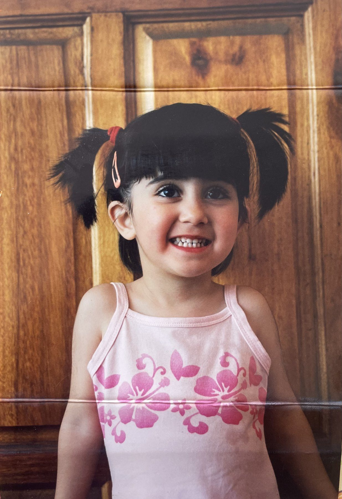

I studied biomedical science, then got a job in digital marketing and somehow ended up building software at a startup.
At the startup I began in marketing at Recruitcha, the recruitment agency. From there I moved into recruitment and building our internal tools, and then into product development and technical work on Recruitcha GTM, the software product. I taught myself the software side using AI tools.
Experience
- Product development and technical workRecruitcha GTM, software productDates to come
- Recruitment and internal toolingRecruitcha, recruitment agencyDates to come
- MarketingRecruitchaDates to come
- BSc Biomedical Science & PhysiologyUniversity to comeDates to come
A game
Two truths and a lie
Pick the one you think is the lie.
